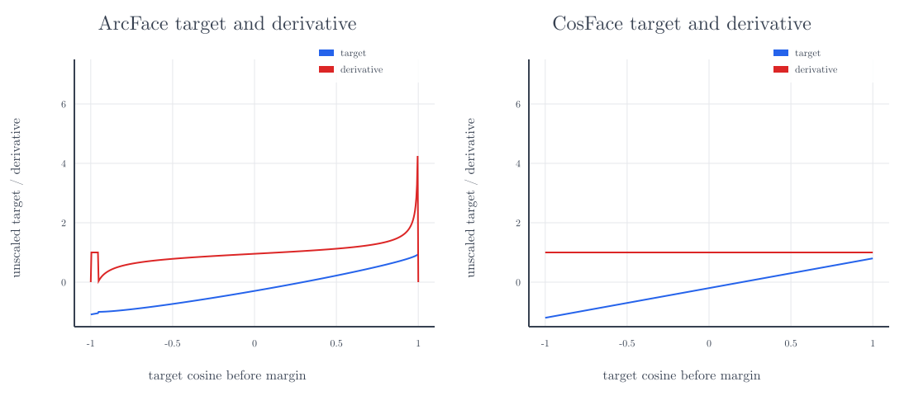
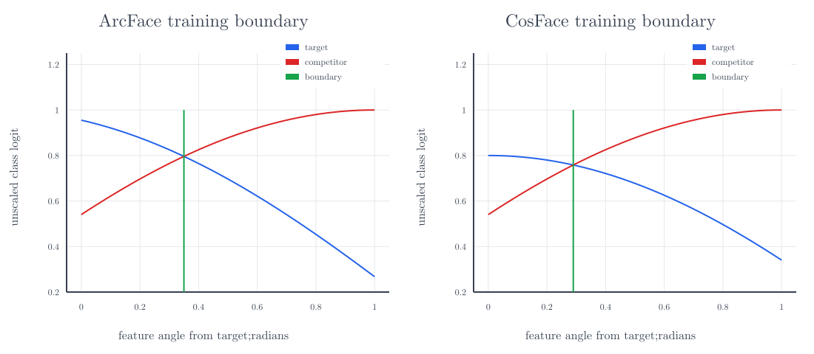
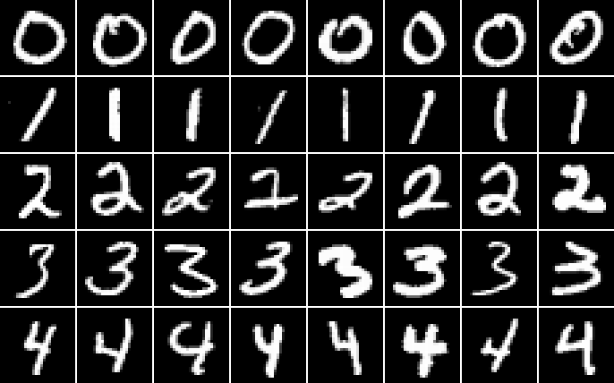
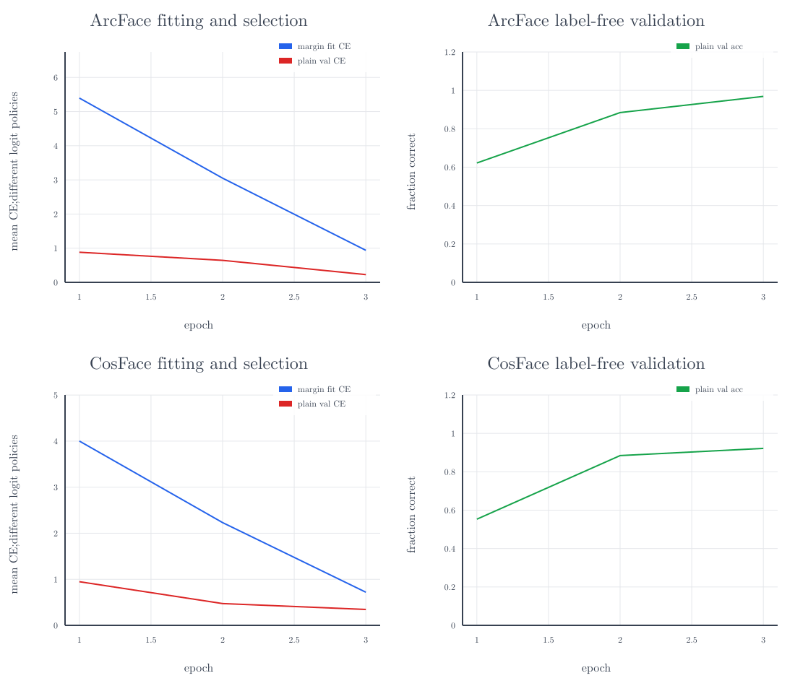
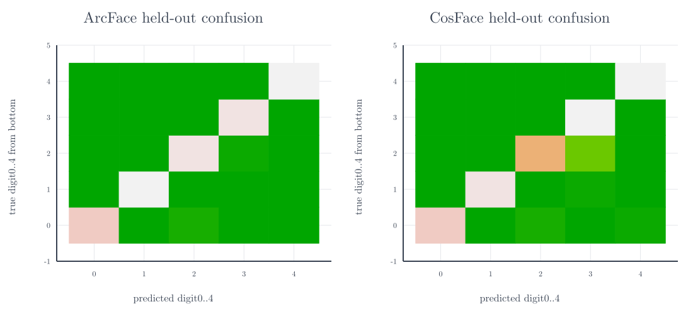
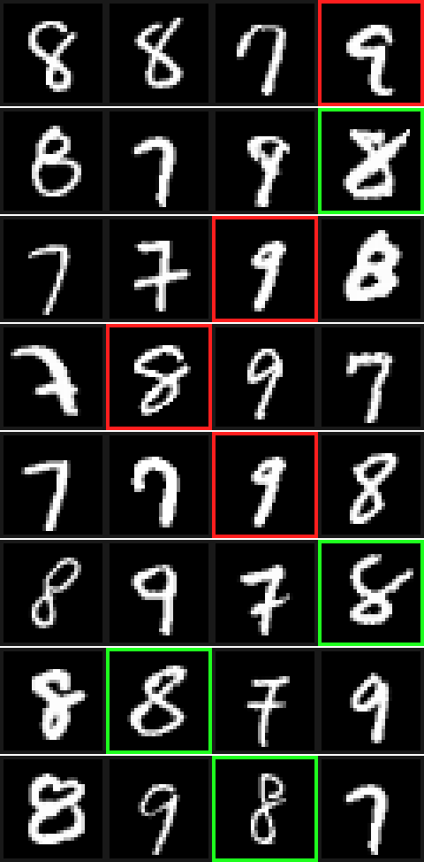
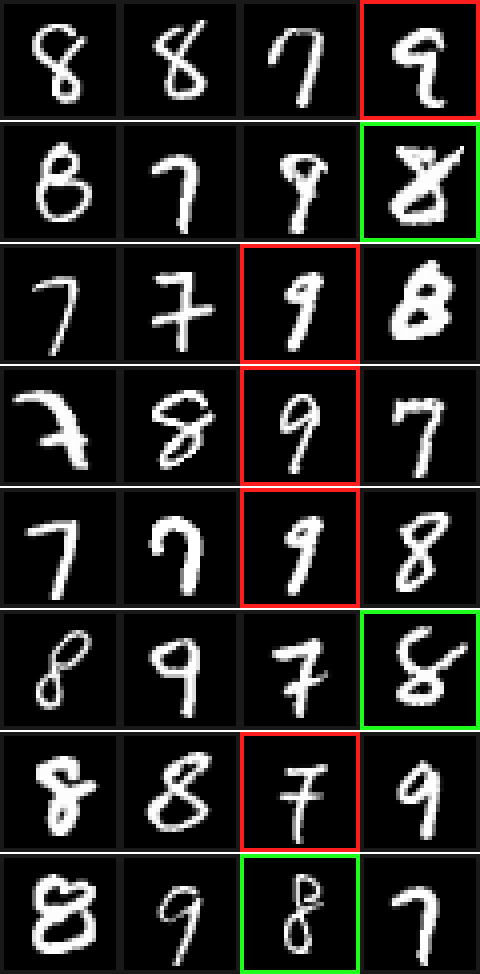
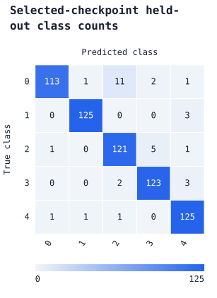
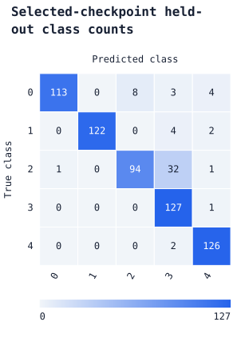

Angular and cosine margins with label-free inference
Abstract
ArcFace and CosFace modify only the labelled training target after feature/weight normalization. Analytic boundary plots,independent full Jacobians and full NN1/head execution precede visible two-model Adam fitting,restored seen-class confusion and actual unseen-class retrieval images.
Source example: examples/cpp/source/nn/1_convolutional_neural_networks/1.8_other_vision_tasks/angular_margin.cpp.
The method
Normalize feature rows and bias-free class-weight columns,apply a target-only training margin,and optimize explicit softmax CE. Select checkpoints with plain label-free validation logits,then measure seen-class classification separately from class-disjoint verification and retrieval.
The concept diagram below is drawn by dm::graphics::Diagram. Its editable C++
source is the complete block below; regeneration uses the same datamunge toolchain
as the numerical examples. Exports consume the saved local SVG.
#include <dm/dm.hpp>
int main() {
std::filesystem::create_directories("build");
dm::graphics::Diagram diagram;
diagram.node("n0", {0.0, 0}, "Normalize directions\nFeatures and classes");
diagram.node("n1", {5.2, 0}, "Margin on target only\nVisible Adam fitting");
diagram.node("n2", {10.4, 0}, "Plain cosine inference\nSeen and unseen tests");
diagram.edge("n0", "n1").edge("n1", "n2");
diagram.save_svg("build/angular_margin_concept.svg");
}
Executed tensor architecture
The chosen output is the shared embedding backbone; class prototypes and the training-only angular margin are discussed in the objective section.
This figure executes the inference configuration shown in the code, using a zero-valued shape probe without fitting or loading a checkpoint. Named stage boundaries group whole subgraphs where available; other nodes retain functional-layer detail. Exact batch-inclusive shapes and reachable parameter totals come from the trace. Shared linear scales map spatial dimensions and channel counts to blocks; the one-pixel visibility floor is disclosed in the legend. Labels use compact monospace text, rotate counterclockwise and sit beside their own glyphs. Arrows flow left to right; wide diagrams scroll at native size on the website.
#include <dm/dm.hpp>
int main() {
namespace n = dm::nn;
namespace m = n::models;
n::set_num_threads(2);
std::filesystem::create_directories("build");
n::ParameterStore p(17), state(18);
const auto c = m::FaceNetConfig::Compact();
n::Module architecture_model(
[&](const n::Tensor& image) { return m::FaceNetNN1(p, image, c).embedding; },
"Angular and cosine margins with label-free inference");
n::ModelPlotOptions options;
options.style = n::ModelPlotStyle::Flow;
options.detail = n::ModelPlotDetail::Blocks;
options.labels = {.type = n::ModelPlotLabel::NameAndShape, .size = 12, .wrap = 24};
options.spacing = {.layer = 24, .lane = 12, .label = 8, .margin = 20};
options.sizing.spatial_size = 96;
options.sizing.channel_size = 42;
options.sizing.minimum_extent = 1;
options.opacity = .8;
const auto diagram = architecture_model.plot(n::zeros({1, 28, 28, 1}), options);
diagram.save_svg("build/angular_margin_architecture.svg");
std::print(
"{} displayed nodes; {} reachable learned values.\n",
diagram.nodes().size(),
diagram.parameter_count());
}32 displayed nodes; 108040 reachable learned values.

Change only the labelled target
Let x be a unit feature row and w_c a unit classifier column. The plain logit is \(s\cos\theta_c=sx^Tw_c\). During training,the target logit becomes
For c=cos(theta),the exact ArcFace transform is \(\phi(c)=c\cos m-\sqrt{1-c^2}\sin m\),with derivative \(\cos m+c\sin m/\sqrt{1-c^2}\). CosFace has derivative one. The implementation clips ArcFace c by epsilon1e-6 and floors the sine radicand at epsilon. Its default monotonic tail uses c-m*sin(m) when c<=cos(pi-m). This is an explicit piecewise teaching choice;outside clipped endpoints,the target gradient is zero. Non-target derivatives bypass the transform. The native independent formula oracle checks every target/non-target value and CE derivative,including endpoints,zero margin and both tail policies.
#include <dm/dm.hpp>
int main() {
namespace n = dm::nn;
namespace m = n::models;
const auto x = n::linspace(-1, 1, 501);
auto layout = dm::graphics::RLayout::create(1, 2);
for (bool cosface : {false, true}) {
m::AngularMarginConfig c;
c.kind = cosface ? m::AngularMarginKind::kCosFace : m::AngularMarginKind::kArcFace;
c.margin = cosface ? .2f : .3f;
c.scale = 1;
auto cosine = n::stack({x, n::zeros_like(x)}, 1).requires_grad_();
const auto logits = m::ApplyAngularMargin(cosine, n::zeros({501}, n::DType::Int64), 2, c);
const auto target = n::select(logits, 1, 0),
gradient = n::select(n::grad(n::sum(target), {cosine})[0], 1, 0);
auto p = dm::graphics::RPlot::create();
p.lines(x.to_vector<double>(), target.to_vector<double>(), "target", {37, 99, 235})
.lines(x.to_vector<double>(), gradient.to_vector<double>(), "derivative",
{220, 38, 38})
.title(cosface ? "CosFace target and derivative" : "ArcFace target and derivative")
.x_label("target cosine before margin")
.y_label("unscaled target / derivative")
.y_limits(-1.5, 7.5);
layout.add(p);
}
std::filesystem::create_directories("build");
layout.size(1100, 480).fit_panels().save_svg("build/angular_margin_transform.svg");
std::print("ArcFace m.3 and CosFace m.2,scale1;only target column transformed. Piecewise "
"ArcFace monotonic tail,endpoint clipping and all logit derivatives have "
"independent native oracles.\n");
}ArcFace m.3 and CosFace m.2,scale1;only target column transformed. Piecewise ArcFace monotonic tail,endpoint clipping and all logit derivatives have independent native oracles.

A two-class boundary that can be checked by hand
Place unit class directions beta=1 radian apart and move a feature through angle theta from the target direction. Plain normalized softmax has a boundary beta/2. ArcFace training requires \(\cos(\theta+m)>\cos(\beta-\theta)\),so its boundary is \((\beta-m)/2\). CosFace requires \(\cos\theta-m>\cos(\beta-\theta)\),giving
Both shrink the target’s accepted training region. These formulas apply on the illustrated ordinary angular branch,away from the clipped/tail cases. They describe training;label-free inference retains the plain beta/2 boundary.
#include <dm/dm.hpp>
int main() {
namespace n = dm::nn;
namespace m = n::models;
const auto theta = n::linspace(0, 1, 201);
auto layout = dm::graphics::RLayout::create(1, 2);
for (bool cosface : {false, true}) {
const double margin = cosface ? .2 : .3,
boundary =
cosface ? .5 - std::asin(margin / (2 * std::sin(.5))) : (1 - margin) / 2;
m::AngularMarginConfig c;
c.kind = cosface ? m::AngularMarginKind::kCosFace : m::AngularMarginKind::kArcFace;
c.margin = float(margin);
c.scale = 1;
const auto cosine = n::stack({n::cos(theta), n::cos(1. - theta)}, 1),
labels = n::zeros({201}, n::DType::Int64);
const auto logits = m::ApplyAngularMargin(cosine, labels, 2, c);
auto p = dm::graphics::RPlot::create();
p.lines(theta.to_vector<double>(), n::select(logits, 1, 0).to_vector<double>(), "target",
{37, 99, 235})
.lines(theta.to_vector<double>(), n::select(logits, 1, 1).to_vector<double>(),
"competitor", {220, 38, 38})
.lines({boundary, boundary}, {.2, 1.}, "boundary", {22, 163, 74})
.title(cosface ? "CosFace training boundary" : "ArcFace training boundary")
.x_label("feature angle from target;radians")
.y_label("unscaled class logit")
.y_limits(.2, 1.25);
layout.add(p);
std::print("{} training boundary {:.9f} rad;plain inference boundary.5 rad. Native checks "
"verify equality and opposite sides.\n",
cosface ? "CosFace" : "ArcFace", boundary);
}
std::filesystem::create_directories("build");
layout.size(1100, 480).fit_panels().save_svg("build/angular_margin_boundary.svg");
}ArcFace training boundary 0.350000000 rad;plain inference boundary.5 rad. Native checks verify equality and opposite sides. CosFace training boundary 0.289874170 rad;plain inference boundary.5 rad. Native checks verify equality and opposite sides.

Normalize rows and columns,then optimize all leaves
The bias-free head normalizes each128D feature row and each classifier weight column. Its squared-norm floor is1e-12. Positive independent row/column scaling cancels above that floor;the native independent Jacobian and central-difference oracles verify every raw feature and weight derivative,including a nearly aligned target. Inference has no target-label argument in the workflow:the head receives an undefined tensor and leaves its training output undefined.
Compact NN1 plus a128x5 head has108,680 learned scalars in29 tensors. Full NN1 plus a128x1000 head has140,153,664 scalars. Both ArcFace and CosFace full 220pxRGB graphs below execute on one image;the compact versions check every parameter gradient is nonzero. NN1 keeps eleven convolutions,two LRN stages, four pools,two maxouts and a linear128D projection. There is no BN state.
#include <dm/dm.hpp>
int main() {
namespace n = dm::nn;
namespace m = n::models;
n::set_num_threads(2);
for (bool compact : {false, true})
for (bool cosface : {false, true}) {
const auto c = compact ? m::FaceNetConfig::Compact() : m::FaceNetConfig{};
const int classes = compact ? 5 : 1000, batch = compact ? 2 : 1;
n::ParameterStore p(17);
m::AngularMarginConfig margin;
margin.kind = cosface ? m::AngularMarginKind::kCosFace : m::AngularMarginKind::kArcFace;
margin.margin = cosface ? .2f : .3f;
margin.scale = 16;
const auto images = .5 + .45 * n::sin(n::arange(0, batch * c.side * c.side * c.input)
.reshape({batch, c.side, c.side, c.input}) *
.113);
const auto y = n::zeros({batch}, n::DType::Int64);
const auto net = m::FaceNetNN1(p, images, c);
const auto head = m::NormalizedAngularHead(p, net.raw, y, 128, classes, margin);
const auto loss = m::AngularCrossEntropy(head.training, y, classes);
const auto gradient = n::grad(loss, p.parameters());
if (p.count() != (compact ? 108680 : 140153664) || gradient.size() != 29)
return 1;
double smallest = INFINITY;
for (const auto &g : gradient) {
if (!g.defined())
return 1;
const double norm = n::norm(g).item();
if (!std::isfinite(norm))
return 1;
smallest = std::min(smallest, norm);
}
if (compact && smallest <= 0)
return 1;
std::print("{} {}:{} learned scalars,29 finite gradients;minimum gradient norm "
"{:.6g};training CE {:.6f}.\n",
compact ? "Compact28" : "Full220RGB", cosface ? "CosFace" : "ArcFace",
p.count(), smallest, loss.item());
}
}Full220RGB ArcFace:140153664 learned scalars,29 finite gradients;minimum gradient norm 0.493725;training CE 14.123569. Full220RGB CosFace:140153664 learned scalars,29 finite gradients;minimum gradient norm 0.533004;training CE 12.689906. Compact28 ArcFace:108680 learned scalars,29 finite gradients;minimum gradient norm 0.434624;training CE 4.531537. Compact28 CosFace:108680 learned scalars,29 finite gradients;minimum gradient norm 0.419334;training CE 2.991475.
Actual seen and unseen digits
Closed-set fitting uses1280 MNIST training images(digits0–4,first256/class). The next64 images per class supply320 disjoint validation rows. Testing uses 640 official test images from the same five classes,128/class. Separate verification calibration uses only training digits5–6;unseen verification and one-support retrieval use only official test digits7–9,128/class. The actual fitting preview is class-balanced and uses tensor image gathering throughout.
#include <dm/dm.hpp>
int main() {
namespace n = dm::nn;
std::filesystem::path cache;
if (const auto *p = std::getenv("DATAMUNGE_DATA_DIR"))
cache = p;
else if (const auto *p = std::getenv("XDG_CACHE_HOME"))
cache = std::filesystem::path(p) / "datamunge/datasets";
else
cache = std::filesystem::path(std::getenv("HOME")) / ".cache/datamunge/datasets";
dm::datasets::fetch("mnist", (cache / "mnist").string());
const auto train = n::load_mnist((cache / "mnist").string(), "train");
const auto b = n::models::SiameseBuckets(train, {0, 1, 2, 3, 4}, 256);
auto rows = n::models::MetricBatchRows(b, 8, 107);
const auto labels = n::models::MetricDatasetLabels(train);
std::stable_sort(rows.begin(), rows.end(), [&](auto a, auto b) {
return labels[a] < labels[b];
});
std::filesystem::create_directories("build");
n::save_image_grid(n::models::SiameseImages(train, rows), "build/angular_margin_data.png", 8,
0, 1, 2, 1, 3);
std::print("Actual40-row fixed fitting probe,grouped by digits0–4;8 distinct images/class. "
"Validation rows are later images of seen classes;unseen calibration/test "
"classes stay separate.\n");
}Actual40-row fixed fitting probe,grouped by digits0–4;8 distinct images/class. Validation rows are later images of seen classes;unseen calibration/test classes stay separate.

Explicit complete-model Adam for both margins
Each model fits120 visible Adam(.001) updates:three complete passes over1280
images,batch32,shuffle seed29. ArcFace uses margin.3 radians;CosFace margin.2
cosine units;both use scale16. The objective is mean target-margin CE plus
.00005*sum(kernel²). The bias-free head and every NN1 leaf are warmed before
the optimizer. The epoch table labels margin fitting CE and plain validation
CE separately;they use different logits and are not interchangeable losses.
Minimum plain320-row validation CE selects the checkpoint. Restoring must reproduce that score before640 seen-class test rows are scored. Separate256 unseen validation pairs(digits5–6) calibrate a distance threshold;512 unseen test pairs(digits7–9) then measure verification,AUC and confusion. Finally,256 unseen3-way tasks compare trained and untrained embeddings with no fine-tuning. Both models use the same splits/seeds but different margins;these bounded MNIST runs do not reproduce the papers’ face datasets,backbones or training.
#include <dm/dm.hpp>
int main() {
int rendered_confusions = 0;
namespace n = dm::nn;
namespace m = n::models;
n::set_num_threads(2);
std::filesystem::path cache;
if (const auto* p = std::getenv("DATAMUNGE_DATA_DIR"))
cache = p;
else if (const auto* p = std::getenv("XDG_CACHE_HOME"))
cache = std::filesystem::path(p) / "datamunge/datasets";
else
cache = std::filesystem::path(std::getenv("HOME")) / ".cache/datamunge/datasets";
dm::datasets::fetch("mnist", (cache / "mnist").string());
const auto train = n::load_mnist((cache / "mnist").string(), "train"),
test = n::load_mnist((cache / "mnist").string(), "test");
const auto fitting = m::SiameseBuckets(train, {0, 1, 2, 3, 4}, 256),
combined = m::SiameseBuckets(train, {0, 1, 2, 3, 4}, 320),
seen_test = m::SiameseBuckets(test, {0, 1, 2, 3, 4}, 128),
calibration = m::SiameseBuckets(train, {5, 6}, 128),
unseen = m::SiameseBuckets(test, {7, 8, 9}, 128);
std::vector<std::size_t> fit_rows, val_rows, seen_rows, cal_rows, unseen_rows;
for (int c = 0; c < 5; ++c) {
fit_rows.insert(fit_rows.end(), fitting[c].begin(), fitting[c].end());
val_rows.insert(val_rows.end(), combined[c].begin() + 256, combined[c].end());
seen_rows.insert(seen_rows.end(), seen_test[c].begin(), seen_test[c].end());
}
for (const auto& bucket : calibration)
cal_rows.insert(cal_rows.end(), bucket.begin(), bucket.end());
for (const auto& bucket : unseen)
unseen_rows.insert(unseen_rows.end(), bucket.begin(), bucket.end());
const auto cal_pairs = m::SiamesePairs(calibration, 256, 97),
test_pairs = m::SiamesePairs(unseen, 512, 101);
const auto tasks = m::SiameseTasks(unseen, 256, 103);
const auto probe = m::MetricBatchRows(fitting, 8, 107);
const auto probe_x = m::SiameseImages(train, probe), probe_y = m::AngularLabels(train, probe);
std::filesystem::create_directories("build");
std::filesystem::create_directories("figures");
auto curves = dm::graphics::RLayout::create(2, 2),
confusions = dm::graphics::RLayout::create(1, 2);
const auto distances = [](const n::Tensor& features,
const std::vector<std::size_t>& rows,
const std::vector<m::VerificationPair>& pairs) {
std::map<std::size_t, std::int64_t> index;
for (std::size_t i = 0; i < rows.size(); ++i)
index[rows[i]] = i;
std::vector<std::int64_t> left, right;
for (const auto& pair : pairs) {
left.push_back(index.at(pair.left));
right.push_back(index.at(pair.right));
}
return m::MetricPairDistance(features, left, right);
};
const auto pair_labels = [](const std::vector<m::VerificationPair>& pairs) {
std::vector<double> labels;
for (const auto& pair : pairs)
labels.push_back(pair.same);
return n::from_vector(labels);
};
std::vector<m::VerificationPair> task_pairs;
std::vector<std::int64_t> correct;
for (const auto& task : tasks) {
correct.push_back(task.correct);
for (const auto row : task.support)
task_pairs.push_back({task.query, row, 0});
}
const auto correct_columns = n::from_vector(correct);
for (bool cosface : {false, true}) {
const std::string name = cosface ? "CosFace" : "ArcFace",
stem = cosface ? "cosface" : "arcface";
n::ParameterStore p(17);
m::AngularMarginConfig cfg;
cfg.kind = cosface ? m::AngularMarginKind::kCosFace : m::AngularMarginKind::kArcFace;
cfg.margin = cosface ? .2f : .3f;
cfg.scale = 16;
const auto head = [&](const n::Tensor& images, const n::Tensor& labels) {
const auto net = m::FaceNetNN1(p, images, m::FaceNetConfig::Compact());
return m::NormalizedAngularHead(p, net.raw, labels, 128, 5, cfg);
};
// Warm all29 leaves before Adam;no BN moving state is owned by NN1.
{
n::NoGradGuard guard;
head(n::zeros({1, 28, 28, 1}), n::Tensor{});
}
const auto encode_rows =
[&](const n::ImageDataset& data, const std::vector<std::size_t>& rows, bool logits) {
n::NoGradGuard guard;
std::vector<n::Tensor> parts;
for (std::size_t start = 0; start < rows.size(); start += 64) {
const auto end = std::min(rows.size(), start + 64);
const auto out = head(
m::SiameseImages(data, {rows.begin() + start, rows.begin() + end}), n::Tensor{});
if (out.training.defined())
throw std::runtime_error("label-free inference generated training logits");
parts.push_back(logits ? out.inference : out.embedding);
}
return n::concat(parts, 0);
};
const auto episode_scores = [&](const n::Tensor& features) {
return (-distances(features, unseen_rows, task_pairs)).reshape({256, 3});
};
double initial;
{
n::NoGradGuard guard;
initial = m::AngularCrossEntropy(head(probe_x, probe_y).training, probe_y, 5).item();
}
const auto untrained =
m::SiameseOneShotAccuracy(
episode_scores(encode_rows(test, unseen_rows, false)), correct_columns)
.item();
n::OptimizerConfig config;
config.kind = n::OptimizerKind::Adam;
n::Optimizer adam(p, .001, config);
n::BatchOrder order(fit_rows.size(), 32, 29);
std::vector<double> epochs, fit_loss, val_loss, val_accuracy;
double best = INFINITY;
int selected = 0, steps = 0;
const auto path = "build/angular_margin_" + stem + ".npz";
const auto val_y = m::AngularLabels(train, val_rows);
std::print(
"{}:margin{:.1f},scale16;{} learned parameters.\n| epoch | margin fitting CE | "
"plain validation CE | plain validation accuracy |\n|---:|---:|---:|---:|\n",
name,
cfg.margin,
p.count());
for (int epoch = 1; epoch <= 3; ++epoch) {
order.begin_epoch();
double total = 0;
int seen = 0;
for (auto ids = order.next(); !ids.empty(); ids = order.next()) {
std::vector<std::size_t> rows;
for (const auto id : ids)
rows.push_back(fit_rows[std::size_t(id)]);
const auto images = m::SiameseImages(train, rows), labels = m::AngularLabels(train, rows);
const auto loss = m::AngularCrossEntropy(head(images, labels).training, labels, 5);
if (!std::isfinite(loss.item()))
return 1;
total += loss.item() * rows.size();
seen += rows.size();
adam.minimize(loss + .00005 * m::WeightSquares(p));
++steps;
}
const auto logits = encode_rows(train, val_rows, true);
const double value = m::AngularCrossEntropy(logits.to(n::DType::Float64), val_y, 5).item(),
accuracy =
n::mean(n::equal(n::argmax(logits, 1), val_y).to(n::DType::Float64)).item();
epochs.push_back(epoch);
fit_loss.push_back(total / seen);
val_loss.push_back(value);
val_accuracy.push_back(accuracy);
if (value < best) {
best = value;
selected = epoch;
p.save(path);
}
std::print("| {} | {:.6f} | {:.6f} | {:.6f} |\n", epoch, fit_loss.back(), value, accuracy);
}
p.load(path);
const double restored =
m::AngularCrossEntropy(encode_rows(train, val_rows, true).to(n::DType::Float64), val_y, 5)
.item();
if (std::abs(restored - best) > 1e-10)
return 1;
double learned;
{
n::NoGradGuard guard;
learned = m::AngularCrossEntropy(head(probe_x, probe_y).training, probe_y, 5).item();
}
const auto seen_logits = encode_rows(test, seen_rows, true),
seen_y = m::AngularLabels(test, seen_rows);
const auto confusion = m::AngularClassificationConfusion(seen_logits, seen_y);
n::save_npz("build/angular_margin_verification_"+std::to_string(rendered_confusions)+".npz",{{"truth",seen_y},{"prediction",n::argmax(seen_logits,1)},{"counts",confusion}});
n::ConfusionMatrix::from_counts(confusion.to(n::DType::Int64))
.save_svg(
"build/angular_margin_confusion_api_" + std::to_string(rendered_confusions++) + ".svg",
{.title = "Selected-checkpoint held-out class counts"});
const double closed_loss =
m::AngularCrossEntropy(seen_logits.to(n::DType::Float64), seen_y, 5).item(),
closed_accuracy =
n::mean(n::equal(n::argmax(seen_logits, 1), seen_y).to(n::DType::Float64))
.item();
const auto cal_features = encode_rows(train, cal_rows, false),
test_features = encode_rows(test, unseen_rows, false);
const auto threshold = m::CalibrateMetricDistanceThreshold(
distances(cal_features, cal_rows, cal_pairs), pair_labels(cal_pairs));
const auto metrics = m::MetricDistanceMetrics(
distances(test_features, unseen_rows, test_pairs),
pair_labels(test_pairs),
threshold.item())
.to_vector<double>();
const auto scores = episode_scores(test_features);
const auto retrieval = m::SiameseOneShotAccuracy(scores, correct_columns).item();
const auto png = "build/angular_margin_" + stem + "_episodes.png";
n::save_image_grid(m::SiameseEpisodeGallery(test, tasks, scores), png, 1, 0, 1, 2, 1, 2);
std::filesystem::copy_file(
png,
"figures/angular_margin_" + stem + "_episodes.png",
std::filesystem::copy_options::overwrite_existing);
std::print(
"{}:{} Adam steps;selected epoch{},restored plain validation CE {:.6f};fixed fitting "
"margin CE {:.6f}->{:.6f}.\n640 seen test images:plain CE {:.6f},accuracy {:.6f}. "
"Unseen validation-only threshold {:.6f};512 unseen pairs accuracy {:.6f}/AUC "
"{:.6f},TP/FP/FN/TN {:.0f}/{:.0f}/{:.0f}/{:.0f}.\n256 unseen3-way tasks:trained "
"{:.6f},untrained {:.6f},chance1/3. No test updates.\n",
name,
steps,
selected,
best,
initial,
learned,
closed_loss,
closed_accuracy,
threshold.item(),
metrics[0],
metrics[3],
metrics[4],
metrics[5],
metrics[6],
metrics[7],
retrieval,
untrained);
auto a = dm::graphics::RPlot::create(), b = dm::graphics::RPlot::create();
a.lines(epochs, fit_loss, "margin fit CE", {37, 99, 235})
.lines(epochs, val_loss, "plain val CE", {220, 38, 38})
.title(name + " fitting and selection")
.x_label("epoch")
.y_label("mean CE;different logit policies")
.y_limits(0, 1.25 * *std::max_element(fit_loss.begin(), fit_loss.end()));
b.lines(epochs, val_accuracy, "plain val acc", {22, 163, 74})
.title(name + " label-free validation")
.x_label("epoch")
.y_label("fraction correct")
.y_limits(0, 1.2);
curves.add(a).add(b);
auto heat = n::plot_tensor_map(n::reverse(confusion.to(n::DType::Float64), {0}), 0, 128);
heat.title(name + " held-out confusion");
heat.x_label("predicted digit0..4");
heat.y_label("true digit0..4 from bottom");
confusions.add(heat);
}
confusions.size(1100, 500).fit_panels().save_svg("build/angular_margin_confusion.svg");
std::filesystem::copy_file(
"build/angular_margin_confusion.svg",
"figures/angular_margin_confusion.svg",
std::filesystem::copy_options::overwrite_existing);
curves.size(1100, 950).fit_panels().save_svg("build/angular_margin_training.svg");
}ArcFace:margin0.3,scale16;108680 learned parameters.
| epoch | margin fitting CE | plain validation CE | plain validation accuracy |
|---|---|---|---|
| 1 | 5.395854 | 0.881162 | 0.621875 |
| 2 | 3.050636 | 0.643804 | 0.884375 |
| 3 | 0.937358 | 0.226061 | 0.968750 |
ArcFace:120 Adam steps;selected epoch3,restored plain validation CE 0.226061;fixed fitting margin CE 6.456797->0.015360. 640 seen test images:plain CE 0.269927,accuracy 0.948438. Unseen validation-only threshold 1.259365;512 unseen pairs accuracy 0.593750/AUC 0.643631,TP/FP/FN/TN 189/141/67/115. 256 unseen3-way tasks:trained 0.480469,untrained 0.359375,chance1/3. No test updates. CosFace:margin0.2,scale16;108680 learned parameters.
| epoch | margin fitting CE | plain validation CE | plain validation accuracy |
|---|---|---|---|
| 1 | 4.001275 | 0.947272 | 0.553125 |
| 2 | 2.230720 | 0.472770 | 0.884375 |
| 3 | 0.718969 | 0.344804 | 0.921875 |
CosFace:120 Adam steps;selected epoch3,restored plain validation CE 0.344804;fixed fitting margin CE 4.920526->0.028108. 640 seen test images:plain CE 0.392136,accuracy 0.909375. Unseen validation-only threshold 1.031183;512 unseen pairs accuracy 0.609375/AUC 0.685165,TP/FP/FN/TN 240/184/16/72. 256 unseen3-way tasks:trained 0.480469,untrained 0.359375,chance1/3. No test updates.




Closed-set accuracy and transfer to unseen classes answer different questions. The printed verification/retrieval results and actual error images make that distinction visible;good seen-class classification does not establish strong unseen-class retrieval. No real-face accuracy or pretrained-model claim follows from these digit experiments.
Native confusion matrices
These matrices use the held-out predictions from the executed program above.
The native ConfusionMatrix SVG API labels exact counts with true classes
running from top to bottom and predicted classes from left to right.


Regenerate adjacent views from this run
#include <dm/dm.hpp>
int main(){std::filesystem::copy_file("build/angular_margin_arcface_episodes.png","build/export_angular_margin_arcface_episodes.png",std::filesystem::copy_options::overwrite_existing);}#include <dm/dm.hpp>
int main(){std::filesystem::copy_file("build/angular_margin_confusion.svg","build/export_angular_margin_confusion.svg",std::filesystem::copy_options::overwrite_existing);}#include <dm/dm.hpp>
int main(){std::filesystem::copy_file("build/angular_margin_confusion_api_0.svg","build/export_angular_margin_confusion_api_0.svg",std::filesystem::copy_options::overwrite_existing);}#include <dm/dm.hpp>
int main(){std::filesystem::copy_file("build/angular_margin_confusion_api_1.svg","build/export_angular_margin_confusion_api_1.svg",std::filesystem::copy_options::overwrite_existing);}#include <dm/dm.hpp>
int main(){std::filesystem::copy_file("build/angular_margin_cosface_episodes.png","build/export_angular_margin_cosface_episodes.png",std::filesystem::copy_options::overwrite_existing);}Conclusion
The margin geometry,normalization derivatives and label-free inference policy are explicit. Complete compact fitting and restored held-out images distinguish seen-class classification from unseen transfer. Tensor calculations preserve the source margin/tail conventions while avoiding hidden numerical evaluation loops.
References
- [Deng et al.(2019),ArcFace:Additive Angular Margin Loss for Deep Face Recognition](https://arxiv.org/abs/1801.07698v3).
- [Wang et al.(2018),CosFace:Large Margin Cosine Loss for Deep Face Recognition](https://arxiv.org/abs/1801.09414).